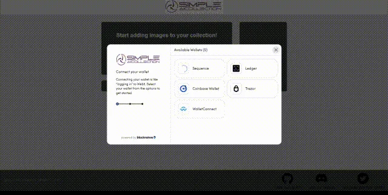
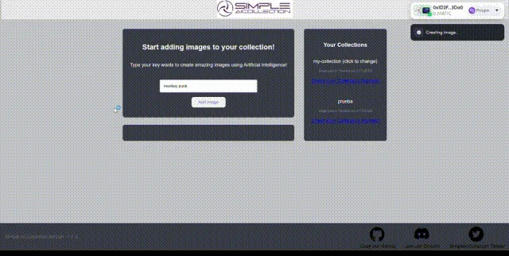

Si se hace dos veces, se automatiza
Lo manual no escala y se olvida. Cada tarea repetida acaba en un script, un playbook o una imagen base.
Ejemplo: imágenes de sistema operativo con Packer y el trabajo repetitivo con Ansible, Python y Bash.
Sergio Bendaña · Cloud Engineer
Chief Button Remover · Si lo pulsas dos veces, lo automatizo.
Llevo 20 años quitando botones: primero scripts en UNIX, luego Ansible y Terraform, y hoy plataformas enteras de automatización en la nube. Cada botón que desaparece es una guardia menos, un error humano menos y un equipo que dedica su tiempo a algo mejor. En casa hago juegos de 8 bits con mis hijas.
Empecé con guardias 24x7 sobre UNIX, crecí administrando granjas de miles de servidores y hoy me dedico a que la infraestructura se cree sola: como código, versionada y repetible. Por el camino monté plataformas Big Data y me saqué un máster en Blockchain, donde mi proyecto final ganó el premio al mejor del máster.
Cuatro reglas que me han servido en 20 años de producción.
Lo manual no escala y se olvida. Cada tarea repetida acaba en un script, un playbook o una imagen base.
Ejemplo: imágenes de sistema operativo con Packer y el trabajo repetitivo con Ansible, Python y Bash.
Si no está versionada y revisada, no se puede repetir. La infraestructura se define, se revisa y se aplica como cualquier software.
Ejemplo: la plataforma de Terraform Enterprise que aprovisiona en AWS, Azure, Google Cloud y nube privada.
Años de guardias 24x7 enseñan a medir antes de que duela y a dejar las cosas más estables de lo que estaban.
Ejemplo: planificación de capacidad con OpenTSDB y Grafana para una granja de 12.000 servidores.
La mejor automatización es la que otros equipos usan sin pensar. Plataformas, plantillas y pipelines antes que heroicidades.
Ejemplo: ayudar a los equipos de desarrollo con sus pipelines de CI/CD y unificar equipos de entrega UNIX.
⛓ Blockchain · Proyecto final del máster
Blockchain sigue siendo difícil de usar y difícil de confiar para la mayoría de personas y empresas: hay que elegir una cadena, aprender sus herramientas, gestionar carteras y pagar en cripto.
FrameBlock es un framework para conectar cualquier aplicación con cualquier blockchain, sea del proveedor o la tecnología que sea.
Hecho junto a Roberto González Rey.


Para demostrarlo construimos una dApp real, de principio a fin. Cada paso es un bloque de la cadena:
Tras 14 intensas semanas, los alumnos del Máster en Blockchain de la Universidad Europea defendieron sus proyectos finales ante un jurado de expertos del sector. Después de una deliberación complicada por el nivel de todos los proyectos, FrameBlock fue elegido ganador.
Ver el anuncio en LinkedIn →
Juegos que hago en casa con mis hijas. Todos se juegan en el navegador, también en el móvil, sin instalar nada y sin anuncios.
INSERTA MONEDA🕹️ Estos juegos tienen dos testers oficiales, y son las mejores jugadoras que conozco. Todo esto es para vosotras. 💛
Quién pasa por el código en GitHub, quién visita bendi.dev, bolsillo y hucha, y cuántos se ponen a jugar. Se actualiza solo cada mañana.
De automatización, infraestructura, cacharros o juegos hechos en casa.